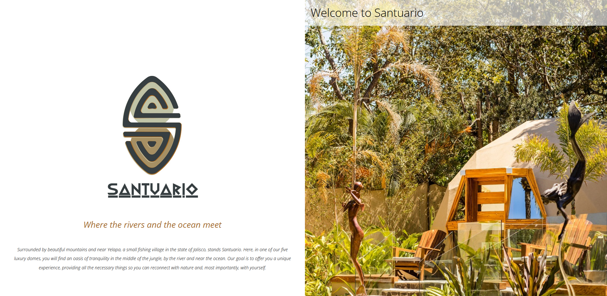

Juan Quinche / Portfolio
Code Examples
Selected web projects, with source code and project details.
Santuario Hostel, Yelapa Mexico
I designed and developed the former version of santuarioyelapa.com, a luxury hostel website with a user-friendly frontend, reservation system, and PayPal checkout flow. The application was primarily built with the MERN stack.

desarrollo visible - React + Express App
desarrollo visible is a consulting company founded in 2009. This pre-production
website was programmed and designed by me; the English version is not yet available.
View project
GitHub User Search - React App
A React app that queries the GitHub users API on demand and displays public profile
information. Search availability depends on the API rate limit.
View deployment
View source code
The Tech Blog - MERN App
A full-stack MERN application with a CRUD API and a React-Redux frontend. It supports
client, moderator, and administrator roles for managing users, topics, posts, and replies.
View source code
The Trattoria - React/Redux App
An Italian restaurant frontend built with React and Redux. It manages menu dishes
through shared application state and can retrieve menu information from a separate API.
View source code
View live demo